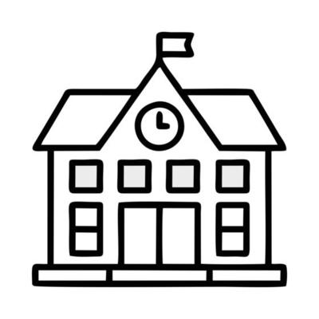
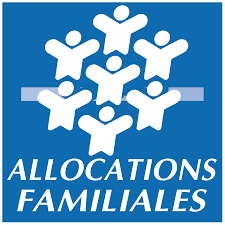

Qui suis-je ?
Je m'appelle Thomas Lopez et je suis étudiant en BTS SIO en alternance au service informatique de la CAF d'Annonay.

Etablissement fréquentés
Ecole St Jacques à Roussillon, collège Jeanne d'Arc à Roussillon, lycée St Denis à Annonay, institut supérieur St Denis à Annonay (BTS SIO actuellement).
Diplomes obtenus
Brevet des collèges, Bac STI2D option numérique.

Mon alternance
Mon alternance se passe à la CAF, mon but premier est de venir en aide aux autres salariés de l'organisme en réglant leurs problèmes informatiques. Je m'occupe également de diveres tâches informatiques, notamment de la maintenance et des configurations.